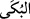

elif-i maksûra (__WORD__) ile yazılır.
Rasûlullah (s.a.)’ın: “Az gülsünler, çok ağlasınlar!” hadis-i şerifi, her ne kadar
gülmede kahkaha ve ağlamada aşırı gözyaşı dökülmesi yasaklanmış olsa da insanların
sevinç ve hüzün anlarında ağlayabileceklerine işâret etmektedir ki, Müfredat’ta da bu
şekilde zikredilmiştir.
Âyetin mânâsı şudur: “İnsanda gülme ve ağlama kuvvetini Allah Teâlâ yarattı. Ya da
gülme ve ağlama sevinç ve hüzünden kinayedir. Bu takdirde sanki: “Feraha kavuşturan
da hüzne gark eden de O’dur” denilmek istenmiş gibidir. Zira sevinç gülmeyi, hüzün de
ağlamayı celbeder. Bu âyetin bir başka mânâ takdiri de “İnsanı sâlih amellere nâil
kılarak sevindiren ve ona nâil kılmayarak hüzünlendiren de O’dur.”
Bu âyetin diğer tefsirleri de şunlardır: “Dünyada nimet ehlini güldürüp şiddet ve
musîbet ehlini ağlatan O’dur.” “ Cennette ehl-i cenneti güldüren, cehennemde oranın
ehlini ağlatan O’dur.” “Yeryüzünü bitki bitirerek güldüren, semayı yağmurla ağlar hale
koyan O’dur.”, “Ağaçları güneş ışıklarıyla güldürüp bulutları yağmurlarla ağlatan
O’dur.” “Kâğıtları işâretler ile güldüren, kalemleri mürekkeplerle ağlatan O’dur.”
“Maymunu gülücü kılan, deveyi ağlayıcı kılan yine O’dur.” “Vaadle güldüren, vaîdle
ağlatan O’dur.” “Âriflerin kalplerini hikmetle güldürüp onların gözlerini hüzün ve
cehennemin yakıcılığını tefekkürden dolayı ağlatan O’dur.” “Evliyâsının kalplerini
ma’rifet nurlarıyla güldürüp düşmanlarının kalplerini gazabının karanlıklarıyla ağlatan
yine O’dur.” “Dostlarını meveddet nergisi, kurbiyyet yasemeni ve şemâil-i cemalinin
kokusuyla güldürüp düşmanlarını azamet ve celali ile ağlatan O’dur.” “Hakk’a yöneleni
güldüren, O’na sırt çevireni ağlatan O’dur” ve “Dişleri güldürüp kalpleri ağlatan veya
dişleri ağlatıp kalpleri güldüren yine O’dur.”
Şair şöyle der:
Yüz gülüyor, yalnızlık yakıyor
Gülmesi yalancıktan ve uydurmadır,
Ey nice gözlerinde yaşlar olmaksızın ağlayan!
Ve nice son nefesinde dişleri arasında gülen!
Bu içi yanan kimsenin yaşayacağı kadar
Bir hayat belirtisi hiç yok mudur?
Âyetin işârî tefsirleri de şu şekildedir: “Cemâlî lütfî tecellîsi sebebiyle lütuf ve cemal
nuruyla aydınlanmış olan kalbi güldüren, celâlî kahrî tecellîsi sebebiyle de kahır ve
celâl zulmetiyle karanlığa gömülmüş nefsi ağlatan O’dur.”, “Celâl tecellîsi ile nefsin
kalbi zulmetle istilâ etmesi sırasında kalbe karşı nefsi güldüren, cemâl tecellîsi ile kalp
nurlarının nefse galip gelmesiyle nefse karşı kalbi güldüren yine O’dur.”
Bu âyet amel eden her insanın gülme ve ağlamasına varıncaya kadar her amelinin
Allah’ın kazâ ve yaratmasıyla olduğuna delâlet etmektedir.
Âişe (r.anha) der ki: “Nebi (s.a.) gülmekte olan bir topluluğun yanından geçerken